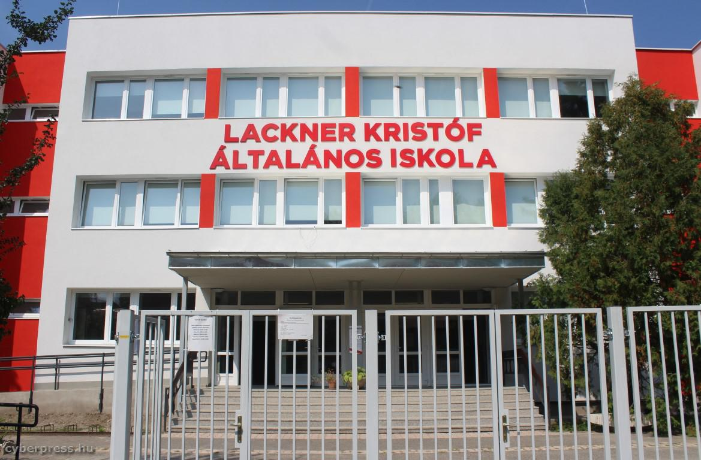
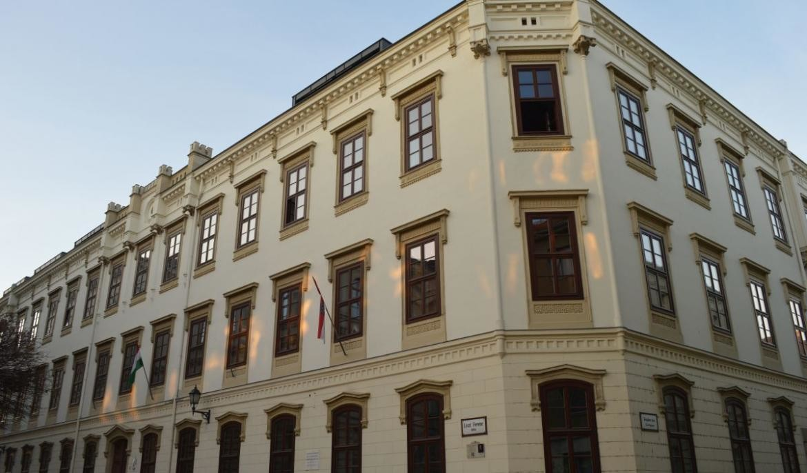
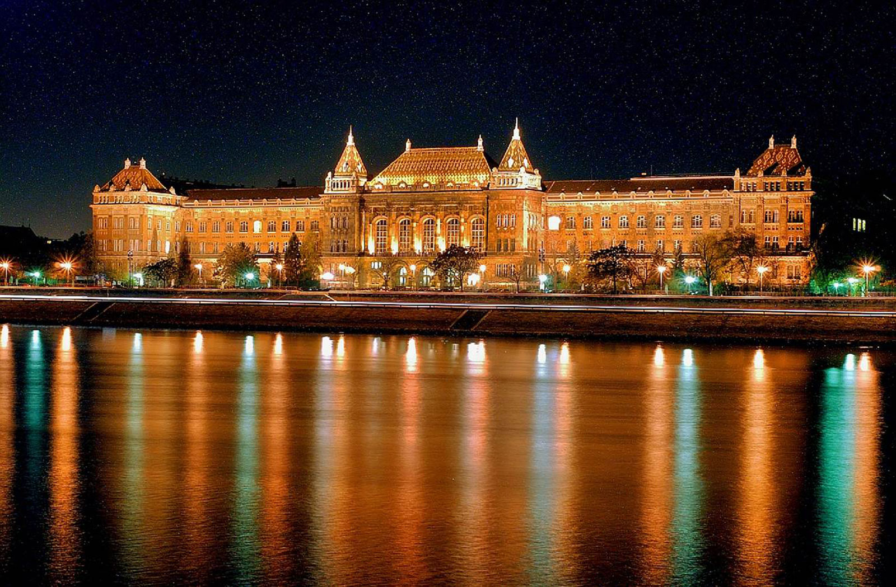

Kezdőlap |
Tanulmányaim |
Sport |
Sopron |
Elérhetőség |
| Lackner Kristóf Általános Iskola Tanulmányaimat
2007-ben kezdtem el Lackner Kristóf Általános Iskolában, köznyelven a
piros iskolában. Nem mondható sajnos a város legjobb általános
iskolájának, de szerettem ide járni leginkébb közelsége és az első
barátok miatt is.
6. osztályos koromban döntöttem úgy, hogy szeretnék többet tanulni, így gimnáziumba felvételiztem. |
 |
|
|  | Széchenyi István Gimnázium A
sikeres felvételinek köszönhetően 2013-ban felvételt nyertem Sopron
egyik legjobb Gimnáziumába. Az aki ide járt azt vallja, hogy ez a
legjobb középiskola a városban, ezt csak a Berzsenyisek próbálják
cáfolni. Egy nagyon jó és összetartó osztályba kerültem be, ahol szinte
senkit nem is ismertem előtte. Egyedül érkeztem előző iskolámból, annak
ellenére, hogy többen viszont osztálytársaikkal együtt. Nem okozott
szerencsée gondot a beilleszkedés hamar összerázódott az egész osztály.
|
|
| Budapesti Műszaki és Gazdaságtudományi Egyetem A
sikeres érettséginek köszönhetően felvételt nyertem a Műegyetem
Gépészmérnöki szakára. Ismét egy új közösség, új élmények vártak, de
itt is egy nagyon összetartó közösség részévé váltam. Ebben
valószínűleg a kollégiumi élet is nagy szerepet játszott. Jelenleg is
itt tanulok, első évem végéhez közelítek mostmár.
|
 |